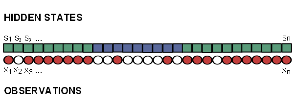

wood<- read.csv("data/wood.csv", sep=";", header=T)
attach(wood)
print(wood[1:10,]) PK obsWood
1 0.0 nothing
2 0.5 nothing
3 1.0 nothing
4 1.5 wood
5 2.0 wood
6 2.5 nothing
7 3.0 nothing
8 3.5 wood
9 4.0 nothing
10 4.5 nothingHidden Markov Models (HMMs) are models that apply to situations where a sequence of observable outputs (e.g. time or spatial series) are generated by hidden states.
They consist of two processes, a Markov transition process that describes the series of hidden states, and an emission process that describes the series of outputs produced by the system. This process is such that the probability of observing an output at a given point in the series depends only on the current hidden state.
Let’s consider the following example of HMM (which we will refer to as the bags and balls example throughout this tutorial).
An operator has two bags, A et B, filled with either red or white balls in different proportions. He carries out the following experiment:
He thus repeats the same process “drawing of ball, choosing of bag” \(n\) times. Then we are given the sheet of paper with the succession of colors written on it… We thus know the sequence of colors (the observations) but we do not know the sequence of bags (the hidden states). A possible series of hidden states and observations is shown in figure Figure 1.1.
We suppose that at any iteration \(k\), the operator chooses to keep the same bag or to change it only based on a constant rule which depends on the bag he had during iteration \(k-1\).
That is to say that the hidden state variable has the Markov property: its probability distribution at iteration \(k\) depends only on its value at iteration \((k_1)\), but is independent of all previous iterations (hence \(pr(S_k/S_{k-1})\) is independent of \(S_1,S_2,...S_{k-2}\)). It also means that \(pr(S_k/S_{k-1})\) is independent of \(k\).

Finally we know the series \(X=(X_1,X_2,X_3,...,X_n)\) which corresponds, in the bags and balls example, to the balls’ colors (i.e. the observations series). The two possible outcomes are “red” (R) or “white” (W). On the other hand, we do not know the series \(S=(S_1,S_2,S_3,...S_n)\) which corresponds to the names of the bags out of which the balls have been drawn (i.e. the hidden states series)
Here, the possible hidden states are either \(S_k=A\) ou \(S_k=B\) and the possible outcomes are either \(X_k=R\) ou \(X_k=W\).
Let’s consider the following notations:
For all iterations (i.e. for all values of \(k\)), the probabilities of a transition from a hidden state to another are:
Based on these notations we can define the transition matrix (transition from a state to another) as:
| A | B | |
|---|---|---|
| A | \(p_{AA}\) | \(p_{AB}\) |
| B | \(p_{BA}\) | \(p_{BB}\) |
Generalization
Let \(S_k\) be a discrete hidden random variable with sample space (i.e. set of all \(n_S\) possible outcomes) \(\Omega_S\).
The probability of a state \(j\) at time \(k\) given the state was \(i\) at time \(k-1\) is given by matrix:
\[ T=\{t_{ij}\}_{(i,j)\in \Omega_S^2}=pr(S_k=j|S_{k-1}=i) \]
For all iterations (i.e. for all values of \(k\)), the probabilities of the outcomes conditional on hidden state are:
Based on these notations we can define the emission matrix (emission of an outcome from a state) as:
| W | R | |
|---|---|---|
| A | \(p_{AW}\) | \(p_{AR}\) |
| B | \(p_{BW}\) | \(p_{BR}\) |
Generalization
Let \(X_k\) be a discrete observed random variable with sample space (i.e. set of all \(n_X\) possible outcomes) \(\Omega_X\).
The probability of a certain outcome \(l\) at time \(k\) given the state at that same time is \(i\) is given by matrix:
\[ E=\{e_{il}\}_{(i,l)\in \Omega_S\times\Omega_X}=pr(X_k=l|S_k=i) \]
The initial state distribution (i.e. probabilities of being in state i when \(k=1\)) is given by
\[ \pi_i=pr(S_1 = i). \]
We use the notation \(\pi=(\pi_1,\pi_2,...\pi_{n_X})\)
Finally, a hidden Markov model can be fully described by the set of parameters \(\theta = (T,E,\pi)\) where
A HMM user typically searches answers to the following questions:
Answering the first question consists in fitting the model, i.e. estimating its parameters (emission and transition probabilities). This will be the focus of section Chapter 2.
Answering the second one consists in calculating the most likely series of hidden states (based on both observation series and fitted model). This will be the focus of section Chapter 3.
Let’s consider a spatial series consisting of occurrence of wood rafts along a river. Each data sample corresponds to a 500 meters-long section of the river.
wood<- read.csv("data/wood.csv", sep=";", header=T)
attach(wood)
print(wood[1:10,]) PK obsWood
1 0.0 nothing
2 0.5 nothing
3 1.0 nothing
4 1.5 wood
5 2.0 wood
6 2.5 nothing
7 3.0 nothing
8 3.5 wood
9 4.0 nothing
10 4.5 nothingIn the script tools_cat_series you will find some R functions helping with the graphical representation of categorical series.
source("scripts/tools_cat_series.R")
col_outcomes=c("slateblue4","burlywood3")
plot_cat_series(obsWood,x=PK,col=col_outcomes)We want to characterize the fact that the occurrence of wood (“wood” outcome vs “nothing” outcome) is more or less frequent according to an unobserved characteristic of the river. Hence we consider the river is either in a state we define as:
Over the whole series of observations :
print(table(obsWood))obsWood
nothing wood
100 88 pw=table(obsWood)[2]/length(obsWood)
print(pw) wood
0.4680851 We have 46.81% chances of observing the “wood” outcome on a single point.
Cutting the river into (for instance) 20 equal-sized sections, we observe that the frequency of “wood” outcome seems to vary along the river (cf fig. Figure 1.2). If obsWood followed a constant binomial distribution (with a proportion of “wood” outcome \(\pi_w=\) 46.81%) all along the river, then we would have a 95% probability of observing proportions of “wood” outcome between 37% and 57%.